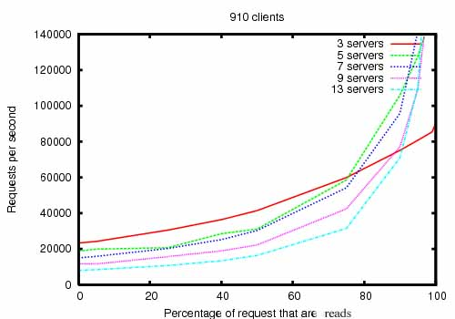
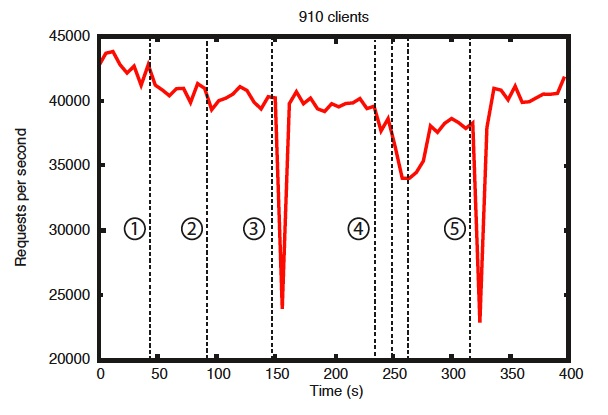

ZooKeeper
ZooKeeper: A Distributed Coordination Service for Distributed Applications
ZooKeeper is a distributed, open-source coordination service for distributed applications. It exposes a simple set of primitives that distributed applications can build upon to implement higher level services for synchronization, configuration maintenance, and groups and naming. It is designed to be easy to program to, and uses a data model styled after the familiar directory tree structure of file systems. It runs in Java and has bindings for both Java and C.
Coordination services are notoriously hard to get right. They are especially prone to errors such as race conditions and deadlock. The motivation behind ZooKeeper is to relieve distributed applications the responsibility of implementing coordination services from scratch.
Design Goals
ZooKeeper is simple. ZooKeeper allows distributed processes to coordinate with each other through a shared hierarchical namespace which is organized similarly to a standard file system. The namespace consists of data registers - called znodes, in ZooKeeper parlance - and these are similar to files and directories. Unlike a typical file system, which is designed for storage, ZooKeeper data is kept in-memory, which means ZooKeeper can achieve high throughput and low latency numbers.
The ZooKeeper implementation puts a premium on high performance, highly available, strictly ordered access. The performance aspects of ZooKeeper means it can be used in large, distributed systems. The reliability aspects keep it from being a single point of failure. The strict ordering means that sophisticated synchronization primitives can be implemented at the client.
ZooKeeper is replicated. Like the distributed processes it coordinates, ZooKeeper itself is intended to be replicated over a set of hosts called an ensemble.

The servers that make up the ZooKeeper service must all know about each other. They maintain an in-memory image of state, along with a transaction logs and snapshots in a persistent store. As long as a majority of the servers are available, the ZooKeeper service will be available.
Clients connect to a single ZooKeeper server. The client maintains a TCP connection through which it sends requests, gets responses, gets watch events, and sends heart beats. If the TCP connection to the server breaks, the client will connect to a different server.
ZooKeeper is ordered. ZooKeeper stamps each update with a number that reflects the order of all ZooKeeper transactions. Subsequent operations can use the order to implement higher-level abstractions, such as synchronization primitives.
ZooKeeper is fast. It is especially fast in "read-dominant" workloads. ZooKeeper applications run on thousands of machines, and it performs best where reads are more common than writes, at ratios of around 10:1.
Data model and the hierarchical namespace
The namespace provided by ZooKeeper is much like that of a standard file system. A name is a sequence of path elements separated by a slash (/). Every node in ZooKeeper's namespace is identified by a path.
ZooKeeper's Hierarchical Namespace

Nodes and ephemeral nodes
Unlike standard file systems, each node in a ZooKeeper namespace can have data associated with it as well as children. It is like having a file-system that allows a file to also be a directory. (ZooKeeper was designed to store coordination data: status information, configuration, location information, etc., so the data stored at each node is usually small, in the byte to kilobyte range.) We use the term znode to make it clear that we are talking about ZooKeeper data nodes.
Znodes maintain a stat structure that includes version numbers for data changes, ACL changes, and timestamps, to allow cache validations and coordinated updates. Each time a znode's data changes, the version number increases. For instance, whenever a client retrieves data it also receives the version of the data.
The data stored at each znode in a namespace is read and written atomically. Reads get all the data bytes associated with a znode and a write replaces all the data. Each node has an Access Control List (ACL) that restricts who can do what.
ZooKeeper also has the notion of ephemeral nodes. These znodes exists as long as the session that created the znode is active. When the session ends the znode is deleted.
Conditional updates and watches
ZooKeeper supports the concept of watches. Clients can set a watch on a znode. A watch will be triggered and removed when the znode changes. When a watch is triggered, the client receives a packet saying that the znode has changed. If the connection between the client and one of the ZooKeeper servers is broken, the client will receive a local notification.
New in 3.6.0: Clients can also set permanent, recursive watches on a znode that are not removed when triggered and that trigger for changes on the registered znode as well as any children znodes recursively.
Guarantees
ZooKeeper is very fast and very simple. Since its goal, though, is to be a basis for the construction of more complicated services, such as synchronization, it provides a set of guarantees. These are:
- Sequential Consistency - Updates from a client will be applied in the order that they were sent.
- Atomicity - Updates either succeed or fail. No partial results.
- Single System Image - A client will see the same view of the service regardless of the server that it connects to. i.e., a client will never see an older view of the system even if the client fails over to a different server with the same session.
- Reliability - Once an update has been applied, it will persist from that time forward until a client overwrites the update.
- Timeliness - The clients view of the system is guaranteed to be up-to-date within a certain time bound.
Simple API
One of the design goals of ZooKeeper is providing a very simple programming interface. As a result, it supports only these operations:
-
create : creates a node at a location in the tree
-
delete : deletes a node
-
exists : tests if a node exists at a location
-
get data : reads the data from a node
-
set data : writes data to a node
-
get children : retrieves a list of children of a node
-
sync : waits for data to be propagated
Implementation
ZooKeeper Components shows the high-level components of the ZooKeeper service. With the exception of the request processor, each of the servers that make up the ZooKeeper service replicates its own copy of each of the components.

The replicated database is an in-memory database containing the entire data tree. Updates are logged to disk for recoverability, and writes are serialized to disk before they are applied to the in-memory database.
Every ZooKeeper server services clients. Clients connect to exactly one server to submit requests. Read requests are serviced from the local replica of each server database. Requests that change the state of the service, write requests, are processed by an agreement protocol.
As part of the agreement protocol all write requests from clients are forwarded to a single server, called the leader. The rest of the ZooKeeper servers, called followers, receive message proposals from the leader and agree upon message delivery. The messaging layer takes care of replacing leaders on failures and syncing followers with leaders.
ZooKeeper uses a custom atomic messaging protocol. Since the messaging layer is atomic, ZooKeeper can guarantee that the local replicas never diverge. When the leader receives a write request, it calculates what the state of the system is when the write is to be applied and transforms this into a transaction that captures this new state.
Uses
The programming interface to ZooKeeper is deliberately simple. With it, however, you can implement higher order operations, such as synchronizations primitives, group membership, ownership, etc.
Performance
ZooKeeper is designed to be highly performance. But is it? The results of the ZooKeeper's development team at Yahoo! Research indicate that it is. (See ZooKeeper Throughput as the Read-Write Ratio Varies.) It is especially high performance in applications where reads outnumber writes, since writes involve synchronizing the state of all servers. (Reads outnumbering writes is typically the case for a coordination service.)

The ZooKeeper Throughput as the Read-Write Ratio Varies is a throughput graph of ZooKeeper release 3.2 running on servers with dual 2Ghz Xeon and two SATA 15K RPM drives. One drive was used as a dedicated ZooKeeper log device. The snapshots were written to the OS drive. Write requests were 1K writes and the reads were 1K reads. "Servers" indicate the size of the ZooKeeper ensemble, the number of servers that make up the service. Approximately 30 other servers were used to simulate the clients. The ZooKeeper ensemble was configured such that leaders do not allow connections from clients.
Note
In version 3.2 r/w performance improved by ~2x compared to the previous 3.1 release.
Benchmarks also indicate that it is reliable, too. Reliability in the Presence of Errors shows how a deployment responds to various failures. The events marked in the figure are the following:
- Failure and recovery of a follower
- Failure and recovery of a different follower
- Failure of the leader
- Failure and recovery of two followers
- Failure of another leader
Reliability
To show the behavior of the system over time as failures are injected we ran a ZooKeeper service made up of 7 machines. We ran the same saturation benchmark as before, but this time we kept the write percentage at a constant 30%, which is a conservative ratio of our expected workloads.

There are a few important observations from this graph. First, if followers fail and recover quickly, then ZooKeeper is able to sustain a high throughput despite the failure. But maybe more importantly, the leader election algorithm allows for the system to recover fast enough to prevent throughput from dropping substantially. In our observations, ZooKeeper takes less than 200ms to elect a new leader. Third, as followers recover, ZooKeeper is able to raise throughput again once they start processing requests.
The ZooKeeper Project
ZooKeeper has been successfully used in many industrial applications. It is used at Yahoo! as the coordination and failure recovery service for Yahoo! Message Broker, which is a highly scalable publish-subscribe system managing thousands of topics for replication and data delivery. It is used by the Fetching Service for Yahoo! crawler, where it also manages failure recovery. A number of Yahoo! advertising systems also use ZooKeeper to implement reliable services.
All users and developers are encouraged to join the community and contribute their expertise. See the Zookeeper Project on Apache for more information.